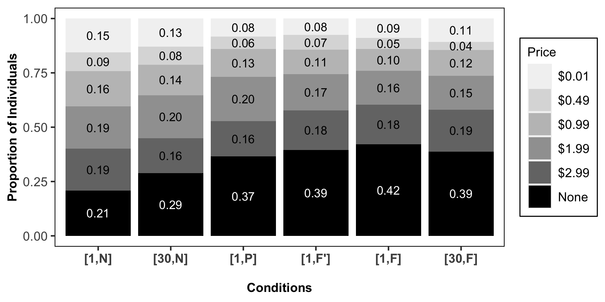
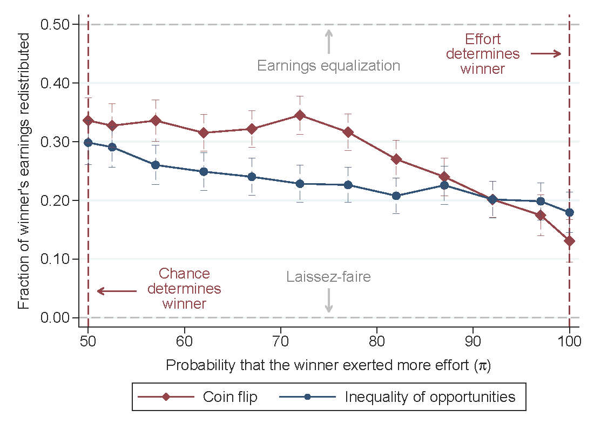

Research
I study what influences and motivates individual behavior.
I am interested in questions related to privacy, fairness, and information markets that have implications for managers and policymakers.
In general, I'm inspired by experiments that uncover how peoples' beliefs and preferences influence their decisions.
People are often unaware that their personal data can serve as valuable inputs for economic activities in secondary data markets. However, whether secondary monetization of personal data determines privacy preferences remains unclear. I examine whether privacy decisions are motivated by the data recipient's ability to benefit from trading individuals' data with a third party. A large, online laboratory experiment involving personally identifiable psychometric data is implemented with real data-sharing consequences and monetary benefits. I find that individuals decrease their willingness to share data---both in terms of their likelihood of participating in the data market and the prices demanded for such participation---when the recipient's ability to monetize the data through secondary trade is salient. Strategic responses to updated beliefs about the recipient's gain from the trade are ruled out via the chosen price elicitation. I find that increased data exposure (to more recipients) does not explain the significant, revealed disutility from secondary monetization. These findings are also robust to controlling for the risk exposure differences between data recipients and third parties.

with Marcel Preuss, Germán Reyes, and Jason Somerville
This paper examines how people redistribute income when there is uncertainty about the role luck plays in determining opportunities and outcomes. We introduce a portable experimental method that generates exogenous variation in the probability that real workers' earnings are due to luck, while varying whether luck interacts with effort in the earning process. Then, we elicit redistribution decisions from a U.S.-nationally representative sample who observe worker outcomes and whether luck magnified workers' effort (``lucky opportunities'') or determined workers’ income directly (``lucky outcomes''). We find that participants redistribute less and are less reactive to changes in the importance of luck in environments with lucky opportunities. We show that individuals rely on a simple heuristic when assessing the impact of unequal opportunities, which leads them to underappreciate the extent to which small differences in opportunities can have a large impact on outcomes. Our findings have implications for models that seek to understand and predict attitudes toward redistribution, while helping to explain the gap between lab evidence on preferences for redistribution and real-world inequality trends.

This study explores valuation and decision-making in licensing algorithms: a type of information good that contains a finite-step, computer-implementable procedure to resolve a well-defined type of problem. I study how the ownership rights of algorithms can influence the perceived value of those algorithms and the decision to license them to others. Licensors assigned to create or own these algorithms reveal higher reservation prices for licensing than licensees are willing to pay. When licensors and licensees are provided with metainformation about an algorithm’s likelihood of success—removing the hard inference problem of assessing algorithm quality—these gaps do not appear among algorithms that perform as well or better than a coin flip.

A common conclusion among researchers is that there is a "privacy paradox" between individuals' privacy attitudes and privacy behavior.
Whether general beliefs and normative stances about privacy regimes are related to real data-sharing activities (i.e., one's value of data privacy) remains an under-explored question,
especially when the methods for eliciting these two preference measurements can be distantly related in practice.
The descriptive results of this online survey show that data security, control rights, and sharing attitudes can be aligned with individuals’ data-sharing activities.
Users’ who exhibited weak privacy behavior also displayed relatively weaker attitudes (and vice versa) in a setting where stated attitudes are elicited after information provisions---about data-sharing consequences---and actual privacy decisions.
Moreover, individuals who were privacy-seeking due to second parties’ data exploitation activities were less likely to state an expectation that these activities occur when businesses collect their personal data.
These results suggest that
(1) concern about data privacy,
(2) demand for control rights and restrictions on the free movement of data, and
(3) awareness about data exploitation
can align with a person's actual privacy behavior.
with Marcel Preuss, Germán Reyes, and Jason Somerville
with Avinash Collis and Ananya Sen
We want to understand whether individuals are aware of their data exposure to data brokers and what they are willing to pay to monitor and delete their data from brokers. We will examine the difference in government and commercial sources of data in individuals’ willingness to pay for privacy. We are also provisioning individuals with personalized information about their data exposure to 90 major data brokers in the U.S. Included in our design is a mix of experimental and survey methods to analyze both causal determinants and heterogeneity of revealed privacy choices, including biased beliefs about data exposure, perceived ownership over personal data, and the accuracy of the personal data harvested by brokers.
with Giulia Solinas, Aija Leiponen, and Tobias Kretschmer
We seek to understand users’ preferences for spreading polarizing content on information platforms, which is informative for the design of effective platform governance strategies. To disentangle beliefs from preferences, we conduct an online experiment to measure whether increasing the salience and degree of polarization consequences can shape users’ content-sharing behavior.